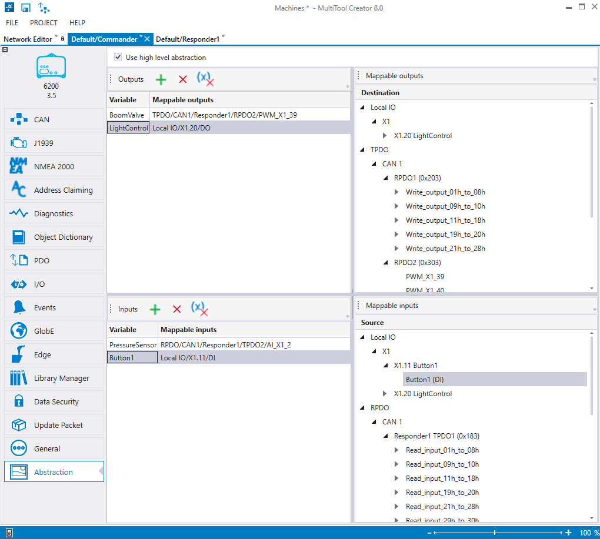

The Abstraction configuration tab can be used to map values in different machine types to the same code template variable.

Select Use high level abstraction at the top of the configuration tab.
Variables can be added to Inputs and Outputs lists. The Destination/Source can be mapped for the variables by dragging and dropping variables from the list on the right side, to the Inputs/Outputs lists. For example, I/O variables, CANopen variables, etc.
Epec Oy reserves all rights for improvements without prior notice.
Source file Abstraction_tab.htm
Last updated 25-Jun-2025